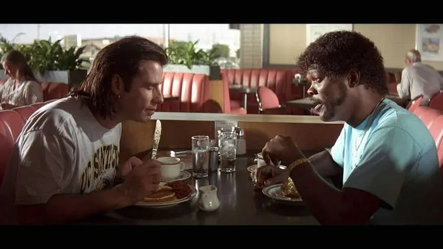

Hawthorne Grills's Corn Muffin

I just don't dig on swine, that's all
Ingredients
- 1¼ cups all-purpose flour, spooned into measuring cup and leveled-off
- ¾ cup yellow cornmeal
- ¼ cup plus 2 tablespoons sugar
- 1 tablespoon baking powder
- 1 teaspoon salt
2 large eggs
- 2 tablespoons honey
- ¾ cup milk (preferably whole but low-fat works too)
- 1 stick (½ cup) unsalted butter, melted and cooled
Steps
- Preheat the oven to 350°F degrees. Line a muffin
pan with paper liners or spray with non-stick cooking
spray. (I prefer to use non-stick cooking spray
so the muffins get nice and crisp on the edges.)
- In a medium bowl, break up the eggs with a whisk.
Whisk in the honey, and then the milk. Set aside.
- In a large bowl, whisk together the flour, cornmeal, sugar, baking powder,
and salt. Add the milk mixture and the melted butter to
the dry ingredients. Whisk until just blended.
Do not overmix; it's okay if there are a few lumps.
Spoon the batter evenly into the prepared muffin pan,
filling each cup about ¾ full. Bake for 17 to 20 minutes,
or until the tops are set and golden.
(Note that the muffins will not dome.)
Cool the muffins for a few minutes in the pan, then serve warm.